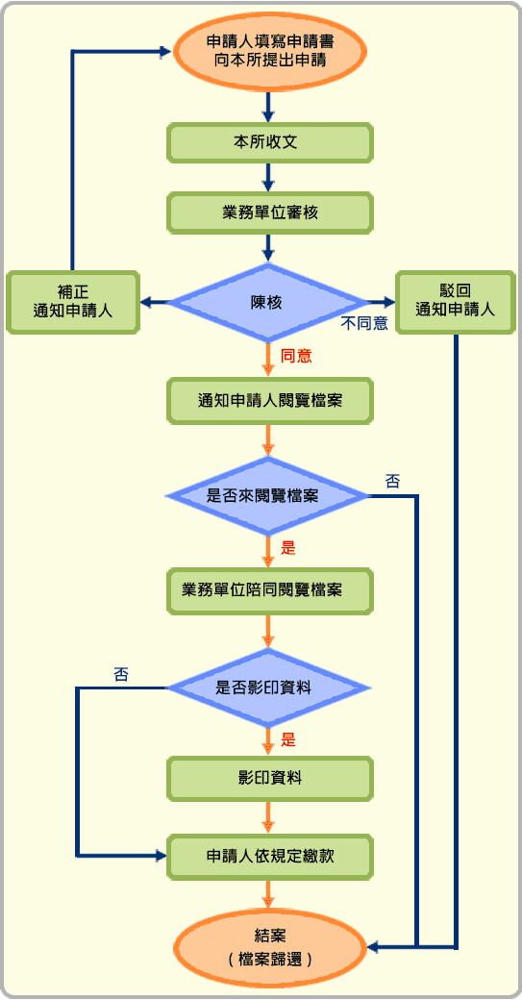

申辦說明
為促進檔案開放應用，並有效發揮檔案功能，依據本所檔案申請作業要點，提供檔案閱覽、抄錄或複製服務，如果您在 檔案管理局全國檔案目錄查詢網
查詢，如果本所有您所需要閱覽、抄錄或複製的開放類檔案，請至本網站「下載專區」下載本所檔案應用申請書及填寫範例，清楚完整填載相關資料後，將申請書郵寄至：「基隆市安樂區安樂路二段164號3樓
檔案室收」，並於信封上註明「檔案應用申請書」字樣，本所將依檔案法第18條及行政程序法第46條規定審核，於15天內將審核結果回復您。
檔案應用服務流程圖

流程說明：
- 申請閱覽、抄錄或複製本所檔案，應以書面敘明理由向本所申請，申請書送達方式以親自持送或郵寄通訊為之，光碟、微縮片等特殊檔案，其申請閱覽程序亦同。
- 本所將自受理申請書之日起15日內為准駁之決定，並將「審核通知書」併同附件「檔案應用審核表」函送或以電子傳遞方式（限申請書註明電子傳遞者）回復申請人。
- 申請人至本所閱覽時，請攜帶本所之核准通知書及身分證明文件或委任書，交受理單位業務承辦人員收驗，身分證明文件將於檔案閱覽完畢點收受後退還。
- 申請人於受理單位於將備妥之檔案交付確認收無誤後，於「檔案應用簽收單」(一式二聯)簽名。
- 申請人，抄寫檔案時不得使用墨水或墨汁。
- 如需複製，請洽受理單位業務承辦人員辦理。
- 申請人閱覽、抄錄或複製檔案，不得有飲食、吸煙、破壞環境整潔或妨害安寧等情事，如有添註、塗改、更換、圈點、污損或其他損壞、拆散檔案及其他不當行為，本所將終止閱覽、抄錄或複製檔案並依相關法規處理。
- 申請閱覽、抄錄或複製檔案，依「土地或建築改良物權利書狀及申請應用地籍資料規費收費標準」之收費項目收取費用，其餘項目則依檔案管理局訂定之「檔案閱覽抄錄複製收費標準」收取費用，如另需提供郵寄服務者，郵遞費用以實支數額計算，每次並加收處理費用新台幣50元。
- 申請人於完成閱覽、抄錄或複製後，應將檔案完整交還受理單位業務承辦人員，待其點收無誤後，交付一聯「檔案應用簽收單」，結束該申請案。
收費標準
申請閱覽、抄錄或複製檔案，依「土地法第67條及第79條之規定之書狀費、工本費及閱覽費收費基準」之收費項目收取費用，其餘項目則依檔案管理局訂定之「檔案閱覽抄錄複製收費標準」收取費用，如另需提供郵寄服務者，郵遞費用以實支數額計算，每次並加收處理費用新台幣50元。